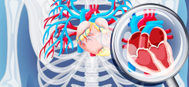

Cardiac Surgery in India
Advanced Cardiac Care for International Patients
Hospitals
Cardiac Surgeons
Treatment Cost
End-to-End
Travel Support
Travel Support
Advanced Cardiac Care for International Patients
Cardiac surgery includes a range of surgical procedures to treat conditions affecting the heart and blood vessels. India offers access to experienced cardiac surgeons, modern hospitals and advanced treatment options for international patients.
Read MoreCardiac surgery can be performed using different techniques based on the patient's condition and medical requirements.
Restores blood flow to the heart

Repairs or replaces damaged valves
Smaller incisions, faster recovery
Treats aortic aneurysms and other aortic conditions
Corrects structural heart defects
Our partner hospitals in India offer advanced treatment options including:
Access to reputed and modern hospitals for cardiac surgery.


Consult with experienced cardiac surgeons and specialists.

30+ Years Experience
18+ Years Experience
15+ Years Experience
22+ Years Experience
16+ Years Experience
Final cost depends on diagnosis, treatment method, hospital, medical condition and length of stay.
May vary based on the type of surgery and individual condition.
Includes treatment, recovery and follow-up consultation.
Get answers to the most common queries about heart surgery in India.
Stories of hope and better heart health from our international patients.
"The entire process was smooth and well-organized. The doctors and support team were excellent."
"Highly professional and caring team. The treatment and overall support made our journey stress-free."
"Great experience from consultation to recovery. The team was very supportive and responsive."
Upload Your medical reports & get personalized treatment options from our experienced specialists in India.